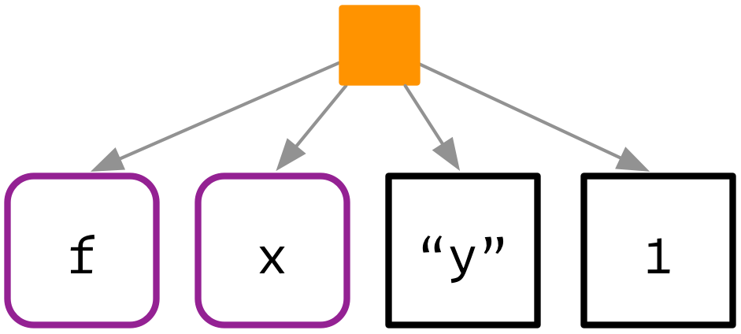
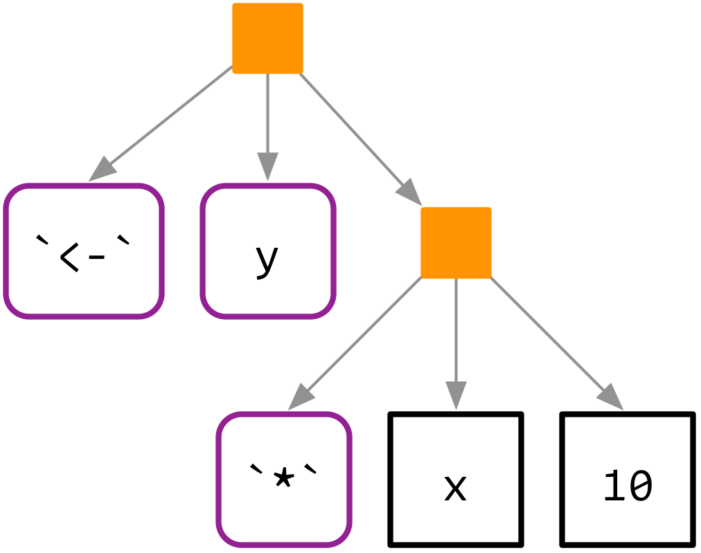
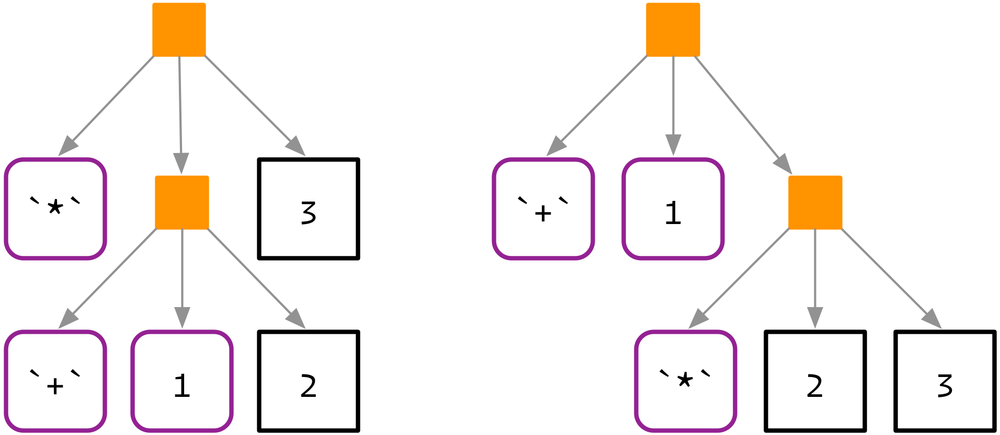
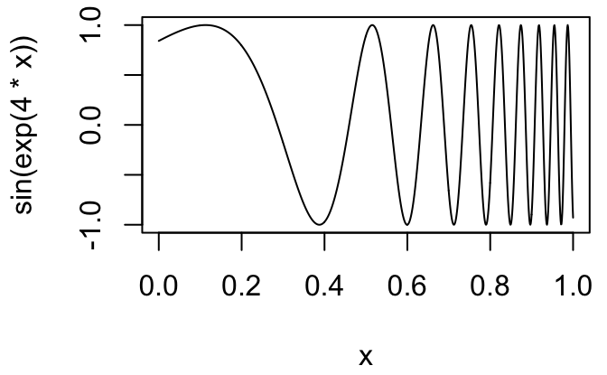
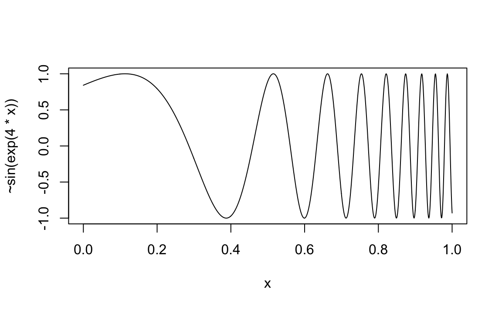

18 Expressions
To compute on the language, we first need to understand its structure. That requires some new vocabulary, some new tools, and some new ways of thinking about R code. The first thing you’ll need to understand is the distinction between an operation and its result. Take this code, which takes a variable x multiplies it by 10 and saves the result to a new variable called y. It doesn’t work because we haven’t defined a variable called x:
y <- x * 10
#> Error in eval(expr, envir, enclos): Objekt 'x' nicht gefundenIt would be nice if we could capture the intent of the code, without executing the code. In other words, how can we separate our description of the action from performing it? One way is to use rlang::expr():
z <- expr(y <- x * 10)
z
#> y <- x * 10expr() returns a quoted expression: the R code that captures our intent.
In this chapter, you’ll learn about the structure of those expressions, which will also help you understand how R executes code. Later, we’ll learn about eval() which allows you to take such an expression and perform, or evaluate, it:
x <- 4
eval(z)
y
#> [1] 4018.1 Abstract syntax trees
Quoted expressions are also called abstract syntax trees (AST) because the structure of code is fundamentally hierarchical and can be naturally represented as a tree. To make that more obvious we’re going to introduce some graphical conventions, illustrated with the very simple call f(x, "y", 1).

Function calls define the hierarchy of the tree. Calls are shown with an orange square. The first child (
f) is the function that gets called. The second and subsequent children (x,"y", and1) are the arguments.NB: Unlike many tree diagrams the order of the children is important:
f(x, 1)is not the same asf(1, x).The leaves of the tree are either symbols, like
fandx, or constants like1or"y". Symbols have a purple border and rounded corners. Constants, which are atomic vectors of length one, have black borders and square corners. Strings are always surrounded in quotes to emphasise their difference to symbols — more on that later.
Drawing these diagrams by hand takes me some time, and obviously you can’t rely on me to draw diagrams for your own code. I’ll supplement the hand-drawn trees with trees drawn by lobstr::ast(). ast() tries to make trees as similar as possible to my hand-drawn trees, while respecting the limitations of the console. Let’s use ast() to display the tree above:
lobstr::ast(f(x, "y", 1))
#> █─f
#> ├─x
#> ├─"y"
#> └─1Calls get an orange square, symbols are bold and purple, and strings are surrounded by quote marks. (The formatting is not currently shown in the rendered book, but you can see it if you run the code yourself.)
ast() supports “unquoting” with !! (pronounced bang-bang). We’ll talk about unquoting in detail in the next chapter; for now note that it’s useful if you’ve already used expr() to capture the expression.
x <- expr(f(x, "y", 1))
# not useful!
lobstr::ast(x)
#> x
# what we want
lobstr::ast(!!x)
#> █─f
#> ├─x
#> ├─"y"
#> └─1For more complex code, you can also use RStudio’s tree viewer to explore the AST interactively, e.g. View(expr(y <- x * 10)).
18.1.1 Infix vs. prefix calls
Every call in R can be written in tree form, even if it doesn’t look like it at first glance. Take y <- x * 10 again: what are the functions that are being called? It not as easy to spot as f(x, 1) because this expression contains two calls in infix form: <- and *. Infix functions come inbetween their arguments (so an infix function can only have two arguments), whereas most functions in R are prefix functions where the name of the function comes first.1
In R, any infix call can be converted to a prefix call if you escape the function name with backticks. That means that these two lines of code are equivalent:
y <- x * 10
`<-`(y, `*`(x, 10))And they have this AST:

lobstr::ast(y <- x * 10)
#> █─`<-`
#> ├─y
#> └─█─`*`
#> ├─x
#> └─10You might remember that code like names(x) <- y ends up calling the names<- function. That is not reflected in the parse tree because the translation needs to happen later, due to the complexities of nested assignments like names(x)[2] <- "z".
lobstr::ast(names(x) <- y)
#> █─`<-`
#> ├─█─names
#> │ └─x
#> └─y18.1.2 Special forms
R has a small number of other syntactical constructs that don’t look like either prefix or infix function calls. These are called special forms and include function, the control flow operators (if, for, while, repeat), and parentheses ({, (, [[, and [). These can also be written in prefix form, and hence appear in the same way in the AST:
lobstr::ast(function(x, y) {
if (x > y) {
x
} else {
y
}
})
#> █─`function`
#> ├─█─x = ``
#> │ └─y = ``
#> ├─█─`{`
#> │ └─█─`if`
#> │ ├─█─`>`
#> │ │ ├─x
#> │ │ └─y
#> │ ├─█─`{`
#> │ │ └─x
#> │ └─█─`{`
#> │ └─y
#> └─<inline srcref>18.1.3 Function factories
Another small detail we need to consider are calls like f()(). The first component of the call is usually a symbol:
lobstr::ast(f(a, 1))
#> █─f
#> ├─a
#> └─1But if you are using a function factory, a function that returns another function, the first component might be another call:
lobstr::ast(f()(a, 1))
#> █─█─f
#> ├─a
#> └─1(See Function factories for more details)
Of course that function might also take arguments:
lobstr::ast(f(b, 2)())
#> █─█─f
#> ├─b
#> └─2These forms are relatively rare, but it’s good to be able to recognise them when they crop up.
18.1.4 Argument names
So far the examples have only used unnamed arguments. Named arguments don’t change the parsing rules, but just add some additional metadata:
lobstr::ast(mean(x = mtcars$cyl, na.rm = TRUE))
#> █─mean
#> ├─x = █─`$`
#> │ ├─mtcars
#> │ └─cyl
#> └─na.rm = TRUE(And note the appearance of another infix function: $)
18.1.5 Exercises
Use
ast()and experimentation to figure out the three arguments to anif()call. What would you call them? Which components are required?What are the arguments to the
for()andwhile()calls?What does the call tree of an
ifstatement with multipleelse ifconditions look like? Why?Two arithmetic operators can be used in both prefix and infix style. What are they?
18.2 R’s grammar
The process by which a computer language takes a sequence of tokens (like x, +, y) and constructs a tree is called parsing, and it is governed by a set of rules known as a grammar. In this section, we’ll use lobstr::ast() to explore some of the details of R’s grammar.
If this is your first reading of the metaprogramming chapters, now is a good time to read the first sections of the next two chapters in order to get the big picture. Come back and learn more of the details once you’ve seen how all the big pieces fit together.
18.2.1 Operator precedence and associativity
Infix functions introduce ambiguity in a way that prefix functions do not2. The parser has to resolve two sources of ambiguity when parsing infix operators. First, what does 1 + 2 * 3 yield? Do you get 9 (i.e. (1 + 2) * 3), or 7 (i.e. 1 + (2 * 3)). Which of the two possible parse trees below does R use?

Programming langauges use conventions called operator precedence to resolve this ambiguity. We can use ast() to see what R does:
lobstr::ast(1 + 2 * 3)
#> █─`+`
#> ├─1
#> └─█─`*`
#> ├─2
#> └─3Predicting the precedence of arithmetic operations is usually easy because it’s drilled into you in school and is consistent across the vast majority of programming languages. Predicting the precedence of other operators is harder. There’s one particularly surprising finding in R: ! has a much lower precedence (i.e. it binds less tightly) than you might expect. This allows you to write useful operations like:
lobstr::ast(!x %in% y)
#> █─`!`
#> └─█─`%in%`
#> ├─x
#> └─yAnother source of ambiguity is repeated usage of the same infix function. For example, is 1 + 2 + 3 equivalent to (1 + 2) + 3 or to 1 + (2 + 3)? This normally doesn’t matter because x + y == y + x, i.e. addition is associative. However, some S3 classes define + in a non-associative way. For example, ggplot2 overloads + to build up a complex plot from simple pieces; this usage is non-associative because earlier layers are drawn underneath later layers.
In R, most operators are left-associative, i.e. the operations on the left are evaluated first:
lobstr::ast(1 + 2 + 3)
#> █─`+`
#> ├─█─`+`
#> │ ├─1
#> │ └─2
#> └─3R has over 30 infix operators divided into 18 precedence groups. While the details are descrbed in ?Syntax, very few people have memorised the complete ordering. Indeed, if there’s any confusion, use parentheses!
These also appear in the AST, like all other special forms:
lobstr::ast(1 + (2 + 3))
#> █─`+`
#> ├─1
#> └─█─`(`
#> └─█─`+`
#> ├─2
#> └─318.2.2 Whitespace
R, in general, is not sensitive to white space. Most white space is not signficiant and is not recorded in the AST. x+y yields exactly the same AST as x + y. This means that you’re generally free to add whitespace to enhance the readability of your code. There’s one major exception:
lobstr::ast(y <- x)
#> █─`<-`
#> ├─y
#> └─x
lobstr::ast(y < -x)
#> █─`<`
#> ├─y
#> └─█─`-`
#> └─x18.2.3 Parsing a string
Most of the time you type code into the console, and R takes care of turning the characters you’ve typed into an AST. But occasionally you have code stored in a string, and you want to parse it yourself. You can do so using rlang::parse_expr():
x1 <- "y <- x + 10"
lobstr::ast(!!x1)
#> "y <- x + 10"
x2 <- rlang::parse_expr(x1)
x2
#> y <- x + 10
lobstr::ast(!!x2)
#> █─`<-`
#> ├─y
#> └─█─`+`
#> ├─x
#> └─10(If you find yourself working with strings containing code very frequently, you should reconsider your work. Read the next chapter and consider if you can more safely generate expressions using quasiquotation.)
The base equivalent to parse_expr() is parse(). It is a little harder to use because it’s specialised for parsing R code stored in files. That means you need supply your string to the text argument, and you’ll get back an expression object (more on that shortly) that you’ll need to subset:
parse(text = x1)[[1]]
#> y <- x + 1018.2.4 Deparsing
The opposite of parsing is deparsing: you have an AST and you want a string that would generate it:
z <- expr(y <- x + 10)
expr_text(z)
#> [1] "y <- x + 10"Parsing and deparsing are not perfectly symmetrical because parsing throws away all information not directly related to the AST. This includes backticks around ordinary names, comments, and whitespace:
cat(expr_text(expr({
# This is a comment
x <- `x` + 1
})))
#> {
#> x <- x + 1
#> }Deparsing is often used to provide default names for data structures (like data frames), and default labels for messages or other output. rlang provides two helpers for those situations:
z <- expr(f(x, y, z))
expr_name(z)
#> [1] "f(x, y, z)"
expr_label(z)
#> [1] "`f(x, y, z)`"Be careful when using the base R equivalent, deparse(): it returns a character vector, and with one element for each line. Whenever you use it, remember that the length of the output might be greater than one, and plan accordingly.
18.2.5 Exercises
R uses parentheses in two slightly different ways as illustrated by this simple call:
f((1)). Compare and contrast the two uses.=can also be used in two ways. Construct a simple example that shows both uses.What does
!1 + !1return? Why?Which arithmetic operation is right associative?
Why does
x1 <- x2 <- x3 <- 0work? There are two reasons.Compare
x + y %+% ztox ^ y %+% z. What does that tell you about the precedence of custom infix functions?deparse()produces vectors when the input is long. For example, the following call produces a vector of length two:expr <- expr(g(a + b + c + d + e + f + g + h + i + j + k + l + m + n + o + p + q + r + s + t + u + v + w + x + y + z)) deparse(expr)What do
expr_text(),expr_name(), andexpr_label()do?
18.3 Data structures
Now that you have a good feel for ASTs and how R’s grammar helps to define them, it’s time to look into more detail about the underlying implementation. In this section you’ll learn about the data structures that R uses to implement the AST:
- Constants and symbols, the leaves of the tree.
- Calls, the branches of the tree.
- Pairlists, a historical data structure now only used for function arguments.
Before we continue, a word of caution about the naming conventions used in this book. Unfortunately, base R does not have a consistent set of conventions, so we’ve had to make our own. We use them consistently in the book and in rlang, but you’ll need to remember some translations when reading base R documentation.
We use expression to refer collectively to the data structures that can appear in an AST (constant, symbol, call, pairlist). In base R, “expression” is a special type that is basically equivalent to a list of what we call expressions. To avoid confusion (as much as possible) we’ll call these expression objects, and we’ll discuss in expression objects.
Base R does not have an equivalent term for our “expression”. The closest is “language object”, which includes symbols and calls, but not constants or pairlists. But note that typeof() and str() use “language” to mean call. Base R uses symbol and name interchangeably; we prefer symbol because “name” has other common meanings (e.g. the name of a variable).
18.3.1 Constants and symbols
Constants and symbols are the leaves of the AST. Symbols represent variable names, and constants represent literal values.
Constants are “self-quoting” in the sense that the expression used to represent a constant is the constant itself:
identical(expr("x"), "x")
#> [1] TRUE
identical(expr(TRUE), TRUE)
#> [1] TRUE
identical(expr(1), 1)
#> [1] TRUE
identical(expr(2), 2)
#> [1] TRUESymbols are used to represent variables. You can convert back and forth between symbols and the strings that represent them with sym() and as_string():
"x"
#> [1] "x"
sym("x")
#> x
as_string(sym("x"))
#> [1] "x"18.3.1.1 The missing symbol
There’s one special symbol that needs a little extra discussion: the empty symbol which is used to represent missing arguments. You can make it with missing_arg() (or expr()):
missing_arg()The missing argument throws an error if the symbol it is bound to is accessed:
m1 <- missing_arg()
m1
#> Error in eval(expr, envir, enclos): Argument "m1" fehlt (ohne Standardwert)This gives it rather peculaiar behaviour since you can still access it in if it’s stored in another data structure:
m2 <- list(missing_arg())
m2[[1]]If you do need to work with a missing argument stored in a variable, you can wrap up any accesses with maybe_missing() :
maybe_missing(m1)That prevents the error from occurring and instead returns another empty symbol.
You can see if it’s misisng by using is_missing():
is_missing(m1)
#> [1] TRUE
is_missing(m2[[1]])
#> [1] TRUEYou only need to know about the missing symbol if you’re programmatically creating functions with missing arguments; we’ll come back to that in the next chapter.
18.3.2 Calls
Calls define the tree in AST. A call behaves similarly to a list. It has a length(); you can extract elements with [[, [, and $; and calls can contain other calls. The main difference is that the first element of a call is special: it’s the function that will get called. Let’s explore these ideas with a simple example:
x <- expr(read.table("important.csv", row = FALSE))
lobstr::ast(!!x)
#> █─read.table
#> ├─"important.csv"
#> └─row = FALSEThe length of a call minus one gives the number of arguments:
length(x) - 1
#> [1] 2The names of a call are empty, except for named arguments:
names(x)
#> [1] "" "" "row"You can extract the leaves of the call by position and by name using [[ and $ in the usual way:
x[[1]]
#> read.table
x[[2]]
#> [1] "important.csv"
x$row
#> [1] FALSEExtracting specific arguments from calls is challenging because of R’s flexible rules for argument matching: it could potentially be in any location, with the full name, with an abreviated name, or with no name. To work around this problem, you can use rlang::lang_standardise() which standardises all arguments to use the full name:
rlang::lang_standardise(x)
#> read.table(file = "important.csv", row.names = FALSE)(Note that if the function uses ... it’s not possible to standardise all arguments.)
You can use [ to extract multiple components, but if you drop the the first element, you’re usually going to end up with a weird call:
x[2:3]
#> "important.csv"(row = FALSE)If you do want to extract multiple elements in this way, it’s good practice to coerce the results to a list:
as.list(x[2:3])
#> [[1]]
#> [1] "important.csv"
#>
#> $row
#> [1] FALSECalls can be modified in the same way as lists:
x$header <- TRUE
x
#> read.table("important.csv", row = FALSE, header = TRUE)You can also construct a call from scratch using rlang::lang(). The first argument should be the function to be called (supplied either as a string or a symbol), and the subsequent arguments are the call to that function:
lang("mean", x = expr(x), na.rm = TRUE)
#> mean(x = x, na.rm = TRUE)18.3.3 Pairlists
There is one data structure we need to discuss for completeness: the pairlist. Pairlists are a remnant of R’s past and have been replaced by lists almost everywhere. The only place you are likely to see pairlists in R is when working with function arguments:
f <- function(x = 10) x + 1
typeof(formals(f))
#> [1] "pairlist"(If you’re working in C, you’ll encounter pairlists more often. For example, calls are also implemented using pairlists)
Fortunately, whenever you encounter a pairlist, you can treat it just like a regular list:
pl <- pairlist(x = 1, y = 2)
length(pl)
#> [1] 2
pl$x
#> [1] 1However, behind the scenes pairlists are implemented using a different data structure, a linked list instead of a vector. That means that subsetting is slower with pairlists, and gets slower the further along the pairlist you index:
l1 <- as.list(1:20)
l2 <- as.pairlist(l1)
microbenchmark::microbenchmark(
l1[[1]],
l1[[10]],
l2[[1]],
l2[[10]]
)
#> Unit: nanoseconds
#> expr min lq mean median uq max neval cld
#> l1[[1]] 186 198 268 210 234 4797 100 a
#> l1[[10]] 188 202 228 219 246 532 100 a
#> l2[[1]] 551 576 610 595 622 977 100 b
#> l2[[10]] 554 586 656 604 632 4781 100 b18.3.4 Expression objects
Finally, we need to discuss the expression object briefly. Expression objects are produced by only two base functions: expression() and parse():
exp1 <- parse(text = c("
x <- 4
x
"))
exp2 <- expression(x <- 4, x)
typeof(exp1)
#> [1] "expression"
typeof(exp2)
#> [1] "expression"
exp1
#> expression(x <- 4, x)
exp2
#> expression(x <- 4, x)
Like calls and pairlists, expression objects behave like a list:
length(exp1)
#> [1] 2
exp1[[1]]
#> x <- 4Conceptually an expression object is just a list of expressions. The only difference is that calling eval() on an expression evaluates each individual expression. We don’t believe this advantage merits introducing a new data structure, so instead of expression objects we always use regular lists of expressions.
Because there might be many top-level calls in a file, parse() doesn’t return just a single expression. Instead, it returns an expression object, which is essentially a list of expressions:
length(exp)
#> [1] 1
typeof(exp)
#> [1] "builtin"18.3.5 Exercises
Which two of the six types of atomic vector can’t appear in an expression? Why? Why can’t you create an expression that contains an atomic vector of length greater than one?
standardise_call()doesn’t work so well for the following calls. Why?lang_standardise(quote(mean(1:10, na.rm = TRUE))) #> mean(x = 1:10, na.rm = TRUE) lang_standardise(quote(mean(n = T, 1:10))) #> mean(x = 1:10, n = T) lang_standardise(quote(mean(x = 1:10, , TRUE))) #> mean(x = 1:10, , TRUE)Why does this code not make sense?
x <- expr(foo(x = 1)) names(x) <- c("x", "")base::alist()is useful for creating pairlists to be used for function arguments:foo <- function() {} formals(foo) <- alist(x = , y = 1) foo #> function (x, y = 1) #> { #> }What makes
alist()special compared tolist()?Concatenating a call and an expression with
c()creates a list. Implementconcat()so that the following code works to combine a call and an additional argument.c(quote(f()), list(a = 1, b = quote(mean(a))) concat(quote(f), a = 1, b = quote(mean(a))) #> f(a = 1, b = mean(a))
18.4 Case study: anaphoric functions
One useful application of make_function() is in functions like curve(). curve() allows you to plot a mathematical function without creating an explicit R function:
curve(sin(exp(4 * x)), n = 1000)
Here x is a pronoun. x doesn’t represent a single concrete value, but is instead a placeholder that varies over the range of the plot. One way to implement curve() would be with make_function():
curve4 <- function(expr, xlim = c(0, 1), n = 100) {
expr <- enquo(expr)
f <- new_function(alist(x = ), get_expr(expr), get_env(env))
x <- seq(xlim[1], xlim[2], length = n)
y <- f(x)
plot(x, y, type = "l", ylab = deparse(substitute(expr)))
}
curve4(sin(exp(4 * x)), n = 1000)
curve3 <- function(expr, xlim = c(0, 1), n = 100) {
expr <- enquo(expr)
e <- rlang::expr({
function(x) !!get_expr(expr)
})
f <- eval_tidy(e, env = get_env(expr))
x <- seq(xlim[1], xlim[2], length = n)
y <- f(x)
plot(x, y, type = "l", ylab = deparse(substitute(expr)))
}
curve3(sin(exp(4 * x)), n = 1000)
Functions that use a pronoun are called anaphoric functions. They are used in Arc (a lisp like language), Perl, and Clojure.
18.4.1 Exercises
How are
alist(a)andalist(a = )different? Think about both the input and the output.Read the documentation and source code for
pryr::partial(). What does it do? How does it work? Read the documentation and source code forpryr::unenclose(). What does it do and how does it work?The actual implementation of
curve()looks more likecurve3 <- function(expr, xlim = c(0, 1), n = 100, env = parent.frame()) { env2 <- new.env(parent = env) env2$x <- seq(xlim[1], xlim[2], length = n) y <- eval(substitute(expr), env2) plot(env2$x, y, type = "l", ylab = deparse(substitute(expr))) }How does this approach differ from
curve2()defined above?
18.5 Case study: Walking the AST with recursive functions
To conclude the chapter we’re going to pull together everything that you’ve learned about ASTs to write solve more complicated tasks. Some inspiration comes from the base codetools package, which provides two interesting functions:
findGlobals()locates all global variables used by a function. This can be useful if you want to check that your function doesn’t inadvertently rely on variables defined in their parent environment.checkUsage()checks for a range of common problems including unused local variables, unused parameters, and the use of partial argument matching.
Getting all of the details of this functions correct is fiddly and complex, so we’re not going to explore the full expression. Instead we’ll focus on the big ideas needed to implement functions that work like them, namely recursion. Recursive functions are a natural fit to tree-like data structures because a recursive function is made up of two parts:
The recursive case handles the nodes in the tree. Typically, you’ll do something to each child of node, usually calling the recursive function again, and then combine the results back together again. For expressions, you’ll need to handle calls and pairlists in the recursive case.
The base case handles the leaves of the tree. The base cases ensure that the function eventually terminates, by solving the simplest cases directly. For expressions, you need to base symbol and names in the base case.
To make this pattern easier to see, we’ll use two helper functions. First we define expr_type() which will return “constant” for constant, “symbol” for symbols, “call”, for calls, “pairlist” for pairlists, and the “type” of anything else:
expr_type <- function(x) {
if (rlang::is_syntactic_literal(x)) {
"constant"
} else if (is.symbol(x)) {
"symbol"
} else if (is.call(x)) {
"call"
} else if (is.pairlist(x)) {
"pairlist"
} else {
typeof(x)
}
}
expr_type(expr("a"))
#> [1] "constant"
expr_type(expr(f(1, 2)))
#> [1] "call"We’ll couple this with a wrapper around the switch function:
switch_expr <- function(x, ...) {
switch(expr_type(x),
...,
stop("Don't know how to handle type ", typeof(x), call. = FALSE)
)
}With these two functions in hand, the basic template for any function that walks the AST is as follows:
recurse_call <- function(x) {
switch_expr(x,
# Base cases
symbol = ,
constant = ,
# Recursive cases
call = ,
pairlist =
)
}Typically, solving the base case will easy so we’ll do that first, and check the results. The recursive cases are a little more tricky, but typically you just need to think about the data structure you want in the output and then find the correct purrr function. To that end, make sure you’re familiar with Functionals before continuing.
18.5.1 Finding F and T
We’ll start simple with a function that determines whether a function uses the logical abbreviations T and F: it will return TRUE if it finds a logical abbreviation, and FALSE otherwise. Using T and F is generally considered to be poor coding practice, and is something that R CMD check will warn about.
Let’s first compare the AST for T vs. TRUE:
ast(TRUE)
#> TRUE
ast(T)
#> TTRUE is parsed as a logical vector of length one, while T is parsed as a name. This tells us how to write our base cases for the recursive function: a constant is never a logical abbreviation, and a symbol is an abbreviation if it’s “F” or “T”:
logical_abbr_rec <- function(x) {
switch_expr(x,
constant = FALSE,
symbol = as_string(x) %in% c("F", "T")
)
}
logical_abbr_rec(expr(TRUE))
#> [1] FALSE
logical_abbr_rec(expr(T))
#> [1] TRUEOur recursive function works with expressions which means we always need to use it with expr(). When writing a recursive function it’s common to write a wrapper that provides defaults or makes the function a little easier to use. Here we’ll typically make a wrapper that quotes its input (we’ll learn more about that in the next chapter), so we don’t need to use expr() every time.
logical_abbr <- function(x) {
logical_abbr_rec(enexpr(x))
}
logical_abbr(T)
#> [1] TRUE
logical_abbr(FALSE)
#> [1] FALSENext we need to implement the recursive cases. Here it’s simple because we want to do the same thing for calls and for pairlists: recursively apply the function to each subcomponent, and return TRUE if any subcomponent contains a logical abbreviation. This is made easy by purrr::some(), which iterates over a list and returns TRUE if the predicate function is true for any element.
logical_abbr_rec <- function(x) {
switch_expr(x,
# Base cases
constant = FALSE,
symbol = as_string(x) %in% c("F", "T"),
# Recursive cases
call = ,
pairlist = purrr::some(x, logical_abbr_rec)
)
}
logical_abbr(mean(x, na.rm = T))
#> [1] TRUE
logical_abbr(function(x, na.rm = T) FALSE)
#> [1] TRUE18.5.2 Finding all variables created by assignment
logical_abbr() is very simple: it only returns a single TRUE or FALSE. The next task, listing all variables created by assignment, is a little more complicated. We’ll start simply, and then make the function progressively more rigorous.
We start by looking at the AST for assignment:
ast(x <- 10)
#> █─`<-`
#> ├─x
#> └─10Assignment is a call where the first element is the symbol <-, the second is name of variable, and the third is the value to be assigned.
Next, we need to decide what data structure we’re going to use for the results. Here I think it will be easiest it we return a character vector. If we return symbols, we’ll need to use a list() and that makes things a little more complicated.
With that in hand we can start by implementing the base cases and providing a helpful wrapper around the recursive function. The base cases here are really simple!
find_assign_rec <- function(x) {
switch_expr(x,
constant = ,
symbol = character()
)
}
find_assign <- function(x) find_assign_rec(enexpr(x))
find_assign("x")
#> character(0)
find_assign(x)
#> character(0)Next we implement the recursive cases. This is made easier by a function that should exist in purrrr, but currently doesn’t:
flat_map_chr <- function(.x, .f, ...) {
purrr::flatten_chr(purrr::map(.x, .f, ...))
}The recursive case for pairlists is simple: we iterate of every element of the pairlist (i.e. each function argument) and combine the results. The case for calls is a little bit more complex - if this is a call to <- then we should return the second element of the call:
find_assign_rec <- function(x) {
switch_expr(x,
# Base cases
constant = ,
symbol = character(),
# Recursive cases
pairlist = flat_map_chr(as.list(x), find_assign_rec),
call = {
if (is_call(x, "<-")) {
as_string(x[[2]])
} else {
flat_map_chr(as.list(x), find_assign_rec)
}
}
)
}
# find_assign(function(x = 1) {})
# Need to handle srcrefs
# Maybe move to new section specifically about functions?
find_assign(a <- 1)
#> [1] "a"
find_assign({
a <- 1
{
b <- 2
}
})
#> [1] "a" "b"Now we need to make our function more robust but coming up with examples intended to break it. What happens we assign to the same variable multiple times?
find_assign({
a <- 1
a <- 2
})
#> [1] "a" "a"It’s easiest to fix this at the level of the wrapper function:
find_assign <- function(x) unique(find_assign_rec(enexpr(x)))
find_assign({
a <- 1
a <- 2
})
#> [1] "a"What happens if we have multiple calls to assign? Currently we only return the first. That’s because when <- occurs we immediately terminate recursion.
find_assign({
a <- b <- c <- 1
})
#> [1] "a"Instead we need to take a more rigorous approach. I think it’s best to keep the recursive function focused on the tree structure, so I’m going to extract out find_assign_call() into a separate function.
find_assign_call <- function(x) {
if (is_call(x, "<-") && is.symbol(x[[2]])) {
lhs <- as_string(x[[2]])
children <- as.list(x)[-1]
} else {
lhs <- character()
children <- as.list(x)
}
c(lhs, flat_map_chr(children, find_assign_rec))
}
find_assign_rec <- function(x) {
switch_expr(x,
# Base cases
constant = ,
symbol = character(),
# Recursive cases
pairlist = flat_map_chr(x, find_assign_rec),
call = find_assign_call(x)
)
}
find_assign(a <- b <- c <- 1)
#> [1] "a" "b" "c"
find_assign(system.time(x <- print(y <- 5)))
#> [1] "x" "y"
find_assign(names(l) <- "b")
#> character(0)While the complete version of this function is quite complicated, it’s important to remember we wrote it by working our way up by writing simple component parts.
18.5.3 Exercises
logical_abbr()works with expressions. It currently fails when you give it a function. Why not? How could you modifylogical_abbr()to make it work? What components will you need to recurse over?f <- function(x = TRUE) { g(x + T) } logical_abbr(!!f)Write a function that extracts all calls to a function.
Instead of writing a wrapper that quotes its input, we could have made the recursive function itself a quoting function. Why is this suboptimal?
You might be familiar with the name Quine from “quines”, computer programs that when run return a copy of their own source code.↩
These two sources of ambiguity do not exist without infix operators, which can be considered an advantage of purely prefix and postfix languages. It’s interesting to compare a simple arithmetic operation in Lisp (prefix) and Forth (postfix). In Lisp you’d write
(+ (+ 1 2) 3)); this avoids ambiguity by requiring parentheses everywhere. In Forth, you’d write1 2 + 3 +; this doesn’t require any parentheses, at the cost of requiring more thought when reading.↩